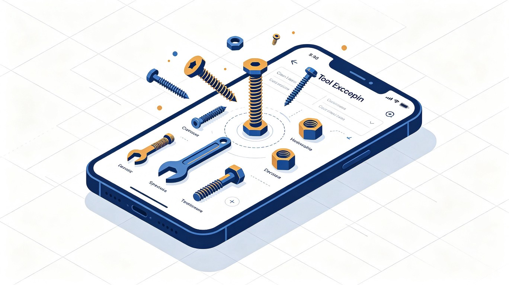

TRAE AI 创造力大赛
工具匠
你的口袋五金工具百科 — 拍照识工具，动手不求人
赛道 / 学习工作

01
创意名称 + 创意介绍
创意名称
工具匠
想解决什么问题
日常五金工具种类繁多，普通人面对家里的螺丝、螺母、扳手常常一头雾水——不认识名字、不会用、更不知道该拿什么工具去操作某个零件。现有信息分散在论坛和短视频中，图文对不上实物；淘宝拍立淘、百度识图等通用识别结果又夹杂大量无关内容，反而增加困惑。缺少一个专为五金工具服务、能拍照识别、能查规格用法的集中知识库。
为什么会想到做这个
组装家具、修理小家电时，常面对一堆陌生零件无从下手，网上搜索结果碎片化、图片与实物对不上。如果手机一拍就能识别工具或零件，并给出用法和操作建议，会大大降低普通人动手的门槛。
大概是什么产品
一款支持名称检索与拍照识别的五金工具百科小程序，附带"工具师"UGC 社区，可发布 DIY 作品、图纸和购买链接。
02
目标用户及痛点
面向哪些用户
- DIY 爱好者与家庭维修人群
- 刚独立生活的年轻人（租房 / 新房装修）
- 木工、电工、电子制作等手工爱好者
- 五金工具行业的"工具师"与技师
在什么场景下使用
- 组装家具时遇到不认识的螺丝，拍照查用法
- 修理家电时不知道该用哪种扳手，拍照找匹配工具
- 购买工具前查规格参数是否匹配需求
- 浏览工具师发布的 DIY 作品，跟着动手做
当前痛点
- 工具知识分散，没有权威集中的百科入口
- 通用识图工具结果杂乱，图文对不上实物
- 拍照识别五金零件的功能市面上几乎空白
- 缺少让专业用户持续贡献内容并获得收益的社区机制
03
价值与意义
商业价值
通过工具师发布的 DIY 作品、图纸和购买链接，自然形成"知识—社区—导流"闭环，平台通过导流分成与广告变现；工具厂商可精准触达动手人群，社区内容反哺交易转化。
社会价值
降低普通人的动手门槛，推广工匠精神与"自己动手"文化，让更多人从单纯消费者变为创造者，也让零散的五金经验得以沉淀和传承。
04
核心功能
F / 01
名称检索
输入工具名称，快速检索到工具的介绍、参数与规格
F / 02
拍照识工具
拍一个螺丝，查看螺丝的介绍和使用场景
F / 03
拍照识零件找工具
拍一个螺丝，找到用什么工具来拧，以及使用技巧
F / 04
工具师 UGC
注册为工具师，补充工具/零件描述或使用技巧
F / 05
DIY 作品发布
工具师可发布 DIY 作品、图纸、挂购买链接
F / 06
工具箱收藏
识别过的工具自动存入"我的工具箱"，方便下次查阅
05
产品落地关键设计
| 维度 | 设计方案 |
|---|---|
| 拍照识别结果 | 展示"可能是这3种工具"的相似度列表，不强行给单一答案 |
| 初始知识库 | 覆盖 100 种常用工具，雇佣专人录入整理 |
| 内容来源 | 初期官方建库 + 后期工具师 UGC 补充 |
| 工具师激励 | 发布 DIY 作品 / 图纸可挂购买链接卖货，形成"越贡献越能卖货"正循环 |
| 变现模式 | 工具师购买链接导流 + 平台广告 |
| 用户留存 | 工具箱收藏、DIY 项目教程、每日一工具推送、工具师等级曝光 |